Wektory / produkcyjny PDF / kontrola płyt
CMYK i prawdziwy WHITE.
Komplet, który można sprawdzić.
Pięć spójnych etykiet oraz ośmiostronicowy zestaw opakowania: siatka, wkładka, skład instrukcji, naklejki i rysunki produktu. Własne źródła wektorowe i kontrola rzeczywistych operatorów PDF.
Pobierz komplet źródeł ZIPKarta techniczna PDFWszystkie pliki do kontroli01 / rodzina etykiet
Jeden system. Pięć wariantów.
Procesowy CMYK, teksty w krzywych, spad 3 mm i osobny poddruk WHITE. Wąskie okno w lewym dolnym rogu pozostaje bez farby procesowej oraz bez bieli. W tej próbce przyjęto choke WHITE 0,15 mm; parametry produkcyjne potwierdza drukarnia.

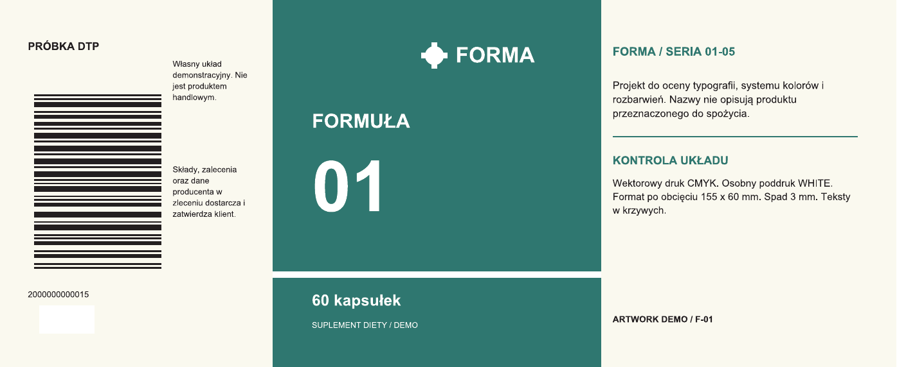

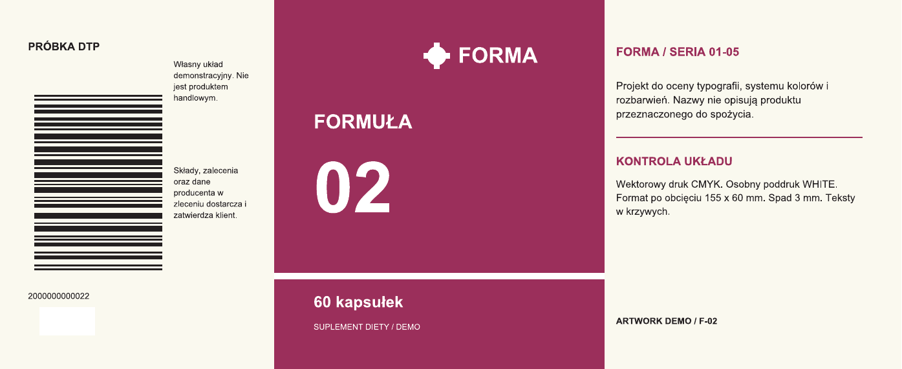

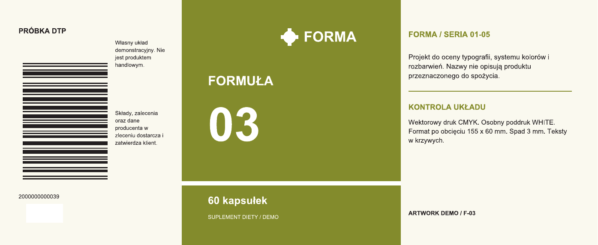

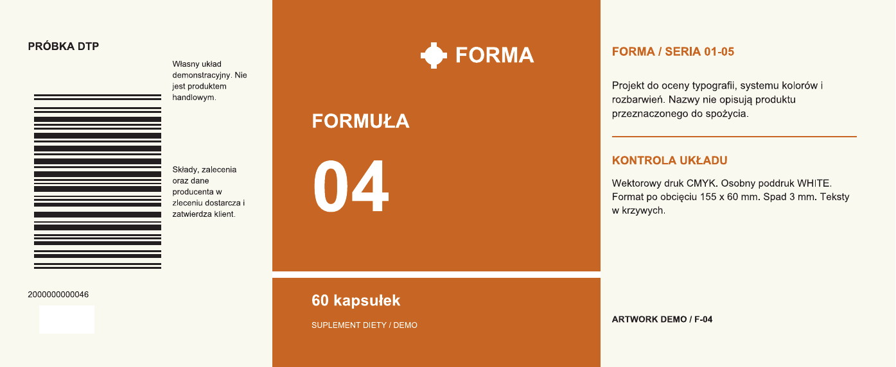

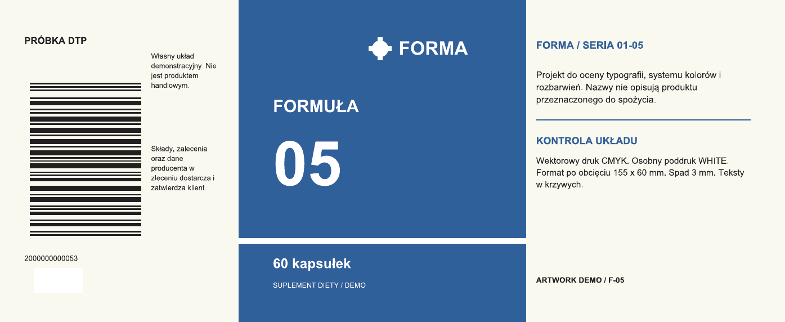
Widoki PNG pochodzą z natywnych PDF rasteryzowanych przez Poppler z symulacją overprintu. SVG jest źródłem kompozycji; autorytatywna separacja WHITE znajduje się w produkcyjnym PDF i kodzie generującym.
02 / rzeczywista separacja
WHITE ma własną płytę.
PASS / rzeczywiste zasoby PDF
- Nazwa koloru: WHITE, przestrzeń Separation.
- Alternatywna przestrzeń DeviceCMYK.
- Efektywny fill overprint: true; OPM: 1.
- Pięć faktycznie namalowanych obszarów WHITE w pięciu etykietach.
- Weryfikacja okna: 255/255; otaczająca farba: 32/255.
- Brak operatorów malowania RGB, bitmap i tekstów wymagających fontu do druku.
Płyty wyodrębniono z operatorów gotowego pliku, z uwzględnieniem bieżących farb i overprintu. Nie narysowano ich osobno dla stworzenia pozornego dowodu.
Cztery farby procesowe
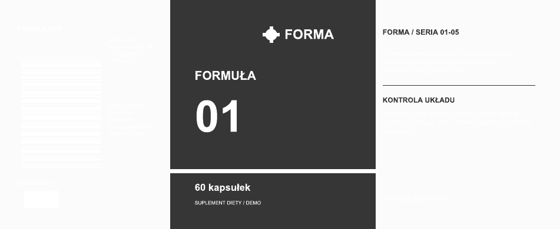
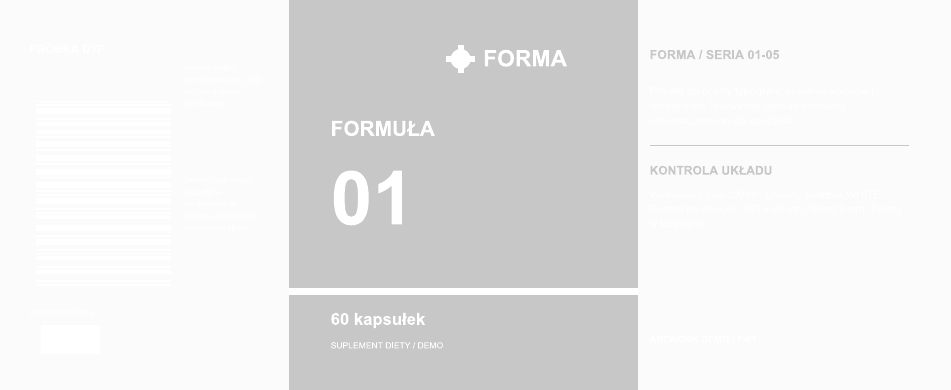
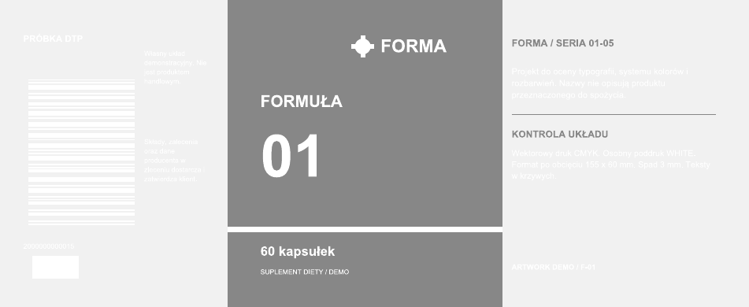
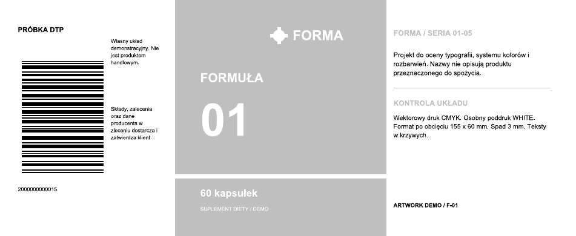
03 / komplet DTP
Pudełko, wkładka i elementy wdrożenia.
Osiem stron źródłowego PDF. Siatki mają kanały DIELINE i CREASE, a wybrany obszar logo — osobny VARNISH z overprintem. To własna geometria demonstracyjna, wymagająca próby fizycznej przed produkcją. Nie deklarujemy zatwierdzenia introligatorni.

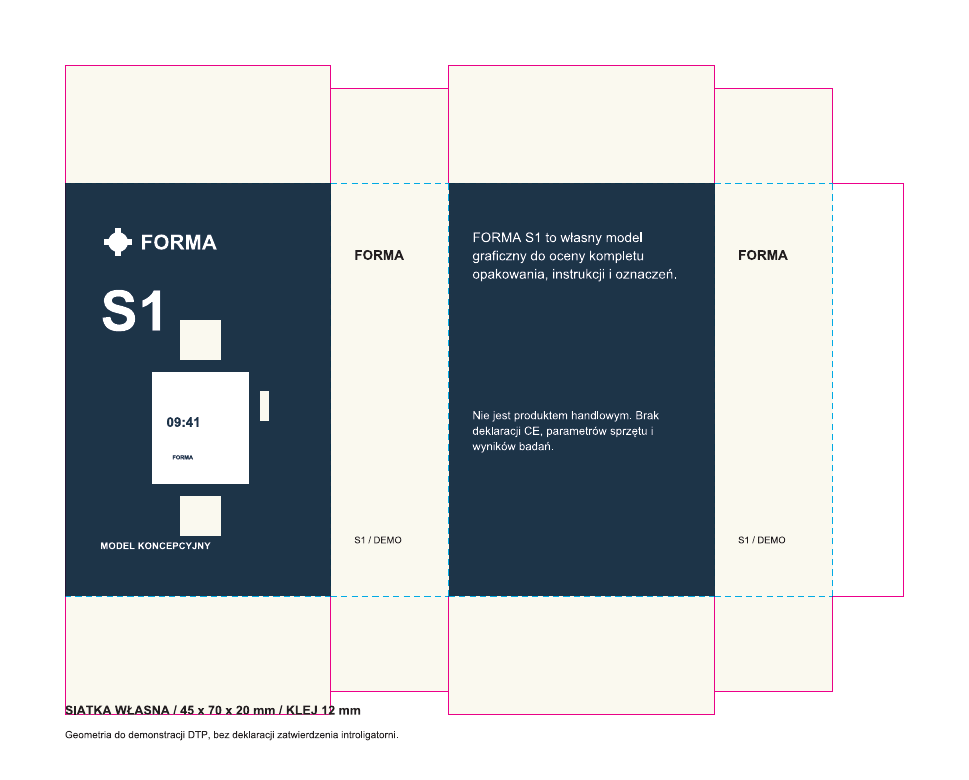

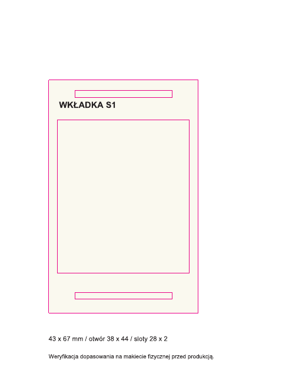

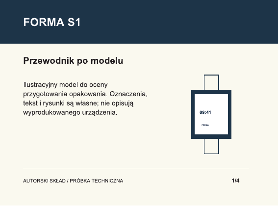

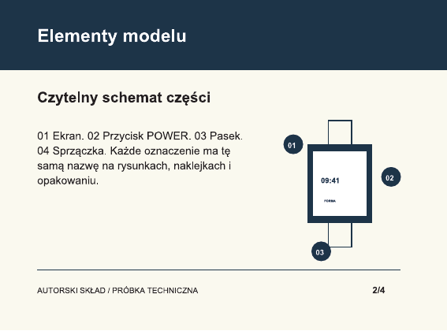

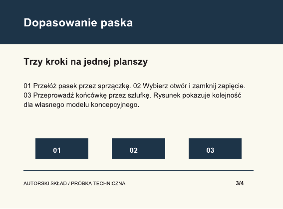

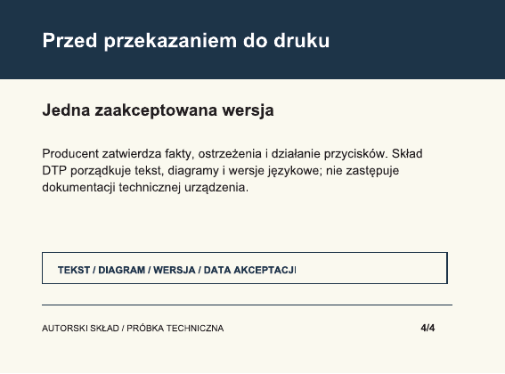

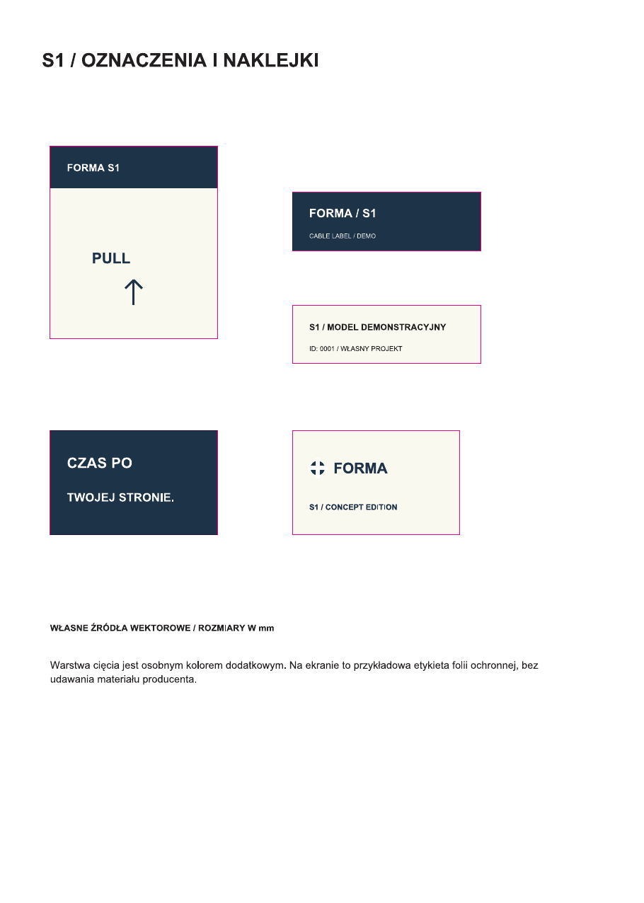

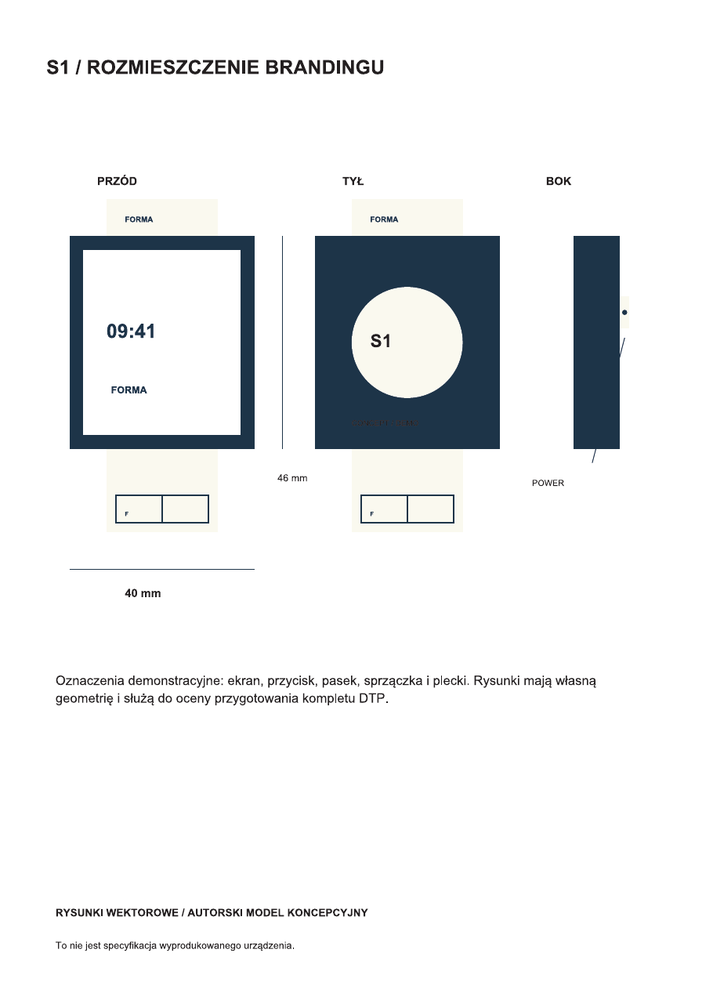
Model urządzenia jest własną koncepcją graficzną. Nie zawiera wymyślonych certyfikatów, deklaracji CE, parametrów elektroniki ani wyników badań. Instrukcja demonstruje rzeczywisty skład i grafiki; produkcyjny tekst dostarcza oraz zatwierdza producent.
04 / preflight
Co kontrola potwierdza.
Sprawdzone w plikach
- Format i TrimBox 155 x 60 mm; BleedBox i spad 3 mm.
- Wektorowa geometria oraz wszystkie teksty w krzywych.
- DeviceCMYK i nazwane kanały spot.
- WHITE: rzeczywiste ustawienia overprint i raster płyty.
- Pięć kodów demonstracyjnych z poprawnymi cyframi kontrolnymi, modułem 0,33 mm i strefami ciszy.
- Komplet ośmiu stron opakowania i źródła SVG.
Do uzgodnienia w prawdziwym druku
Finalne teksty i dane produktu, przydzielone numery EAN, dostarczony wykrojnik, materiał, profil drukarni, definicje farb i docelowy standard PDF.
Próba nie jest certyfikacją PDF/X, pomiarem fizycznej zgodności koloru Pantone, oceną ISO kodu kreskowego ani proofem z maszyny drukarskiej.
Użyto własnych definicji kanałów spot. Nie przedstawiamy przybliżenia RGB jako zakupionej biblioteki Pantone ani gotowych plików Adobe.
05 / źródła
Pliki produkcyjne i kontrolne.
| Plik | Rola |
|---|---|
| labels-production.pdf | 5 etykiet / produkcyjny PDF CMYK + WHITE |
| labels-plate-WHITE.pdf | WHITE / 5 płyt |
| labels-plate-C.pdf | CYAN / 5 płyt |
| labels-plate-M.pdf | MAGENTA / 5 płyt |
| labels-plate-Y.pdf | YELLOW / 5 płyt |
| labels-plate-K.pdf | BLACK / 5 płyt |
| watch-production.pdf | Komplet opakowania / 8 stron |
| watch-spot-plates.pdf | DIELINE, CREASE, VARNISH / 24 strony kontroli |
| technical-sheet.pdf | Karta techniczna proofu |
Pełne wyniki preflight JSON · Parametry i własne dane · Kod źródłowy projektu · Kod kontroli i separacji
Font systemowy wykorzystano do utworzenia krzywych. Nie rozpowszechniamy plików fontów. Podglądy i źródła pochodzą z własnej pracy; załączniki zleceniodawców pozostają prywatne i nie są elementem ZIP.